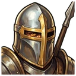
Knight
4321
A couched lance that shoves what it hits a tile back.

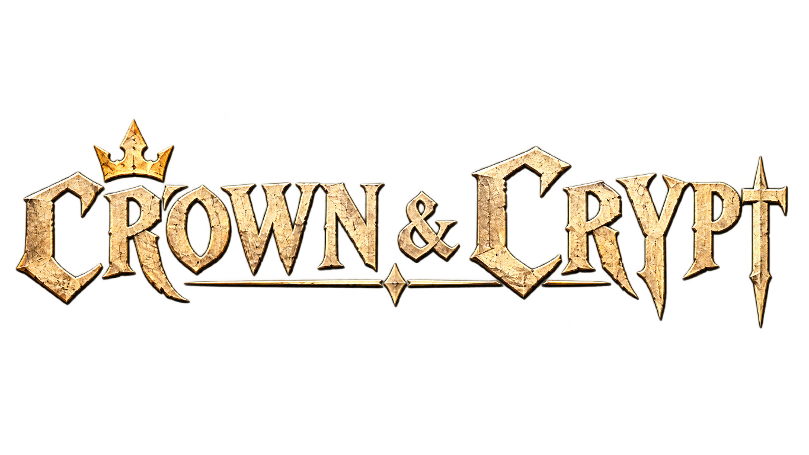
The dead won't stay buried. Lucky you brought knights.
The tutorial and The First March are free. One purchase unlocks the whole road.
Every field is seven tiles by seven, and every blow shows its cost before you strike: who is hurt, who is knocked back, who drowns. The dead are cunning. You always know the price of your move.
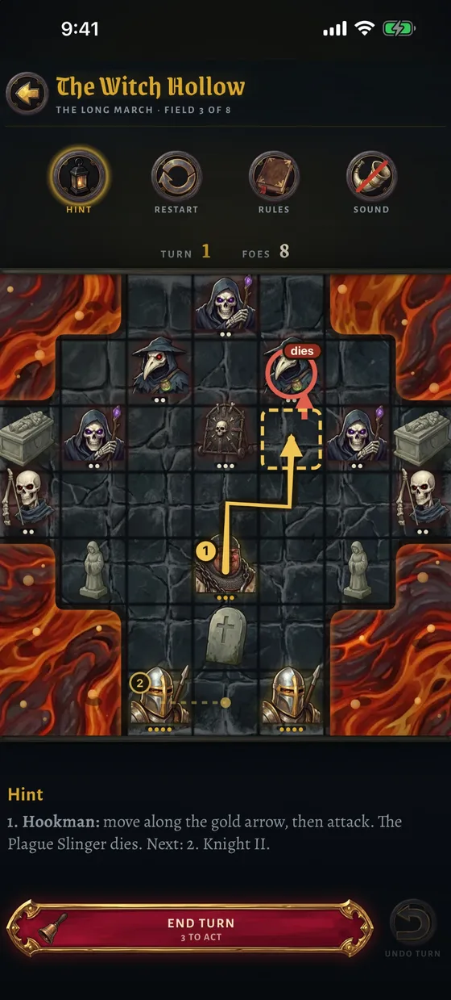
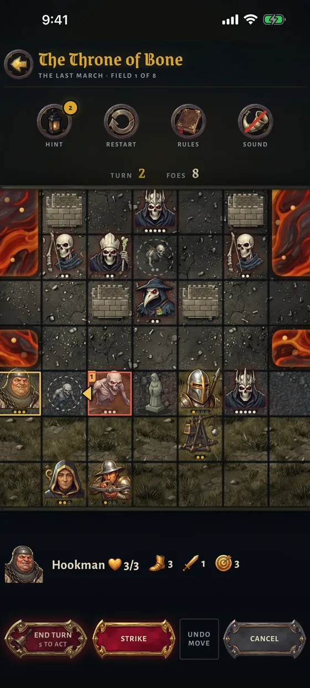
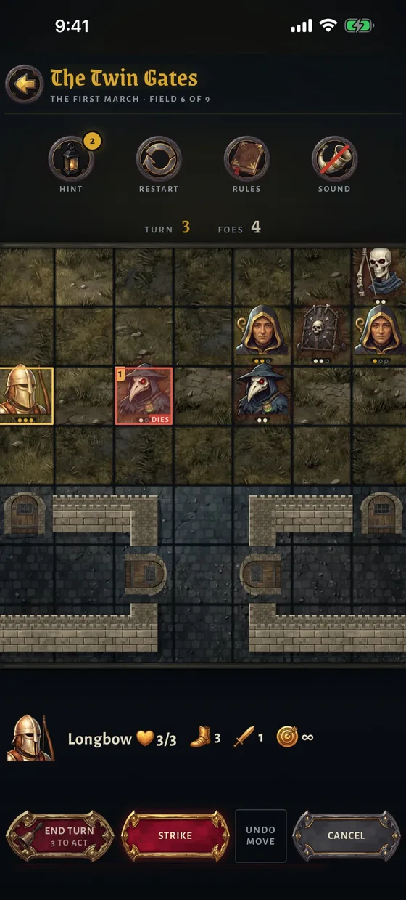
Shove the dead into water, drag them into fire, bring walls down on their heads.
Villages, windmills and keeps stand on the field. Lose them and the field is lost.
A boulder fills a river, a stone breaks a wall, and the field you finish on is not the one you began.
Seven kinds of knight, each with one blow and one way to turn a fight.
health
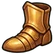
walks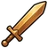
damage reach
A couched lance that shoves what it hits a tile back.
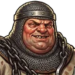
Hooks one of the dead and drags it two tiles in, into water or fire if you choose.

A heavy bolt that stops at the first thing in its lane and shoves it.
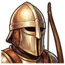
Flies the whole length of the board until it hits something.
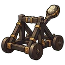
Lobs a stone over anything, and all four tiles around it are shoved out.
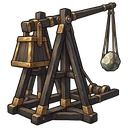
A boulder over anything on the diagonal. In open water it stays and makes a crossing.
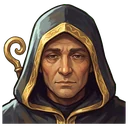
Carries no weapon. Heals +1, breaks a hex or lifts plague fog.
They read your reply before they strike, and they never tire.
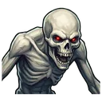
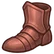
3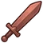
21Walks up and strikes, with a shove, the moment it reaches you.
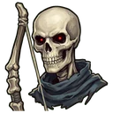
Shoots down a whole rank, to the first thing in its way.
Strikes all four sides at once, and far too heavy to shove.
Throws over anything and leaves a fog that poisons whoever stands in it.
Marks the ground beside it, and a ghoul climbs out a turn later. Kill it and the rite breaks.
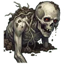
Climbs out of a Grave Priest's mark. A Ghoul in all but its health.

Hexes the ground in its reach. Hexed ground grips the feet and can cost a whole turn.
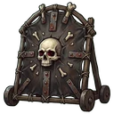
A rolling siege shield. Arrows and bolts stop dead against it, and it strikes nothing itself.
Seven short lessons teach the knights and the dead. Then the road, field after field, each harder than the last.
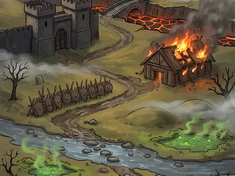
Walls and gates, fords and villages. The dead learn your knights as you do.
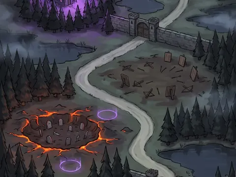
Witches in the wood and priests in the hall. New foes and harder ground.
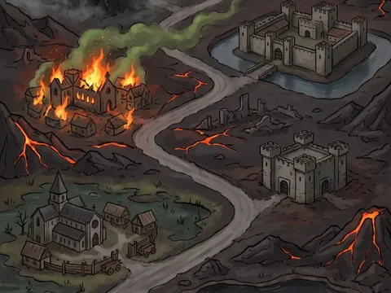
Bone Kings behind walls and lava, and the dead plan as one. Good luck.
Three stars on every field: win it, keep every knight standing, and win it quickly.
25 achievements on Game Center and Google Play Games, 4 of them secret. Each has its own painted medallion.
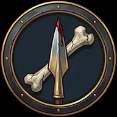
Win your first field.
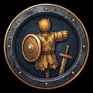
Clear all seven tutorial fields.
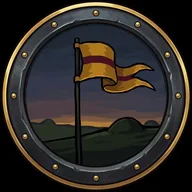
Win every field of The First March.
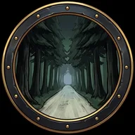
Win every field of The Long March.
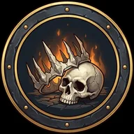
Win every field of The Last March.
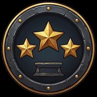
Win a field of the road with all three stars.
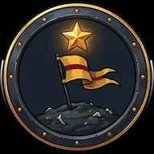
Earn all 27 stars of The First March.
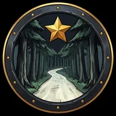
Earn all 24 stars of The Long March.
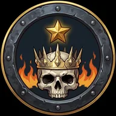
Earn all 24 stars of The Last March.
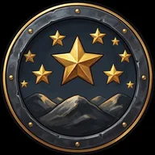
Earn every star on the road.
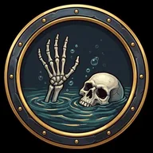
Drown one of the dead on the road.
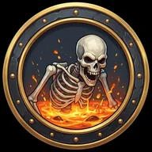
Burn one of the dead in lava on the road.
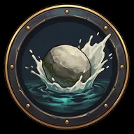
Fill water with a Trebuchet's boulder on the road.
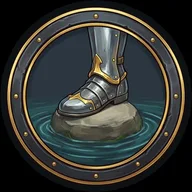
Walk a knight over water you filled on the road.
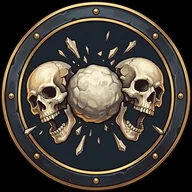
Kill two of the dead with a single blow on the road.
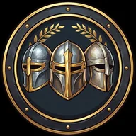
Win a field of The Last March with every knight standing.
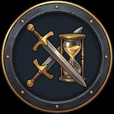
Win a field of the road in fewer turns than its par.
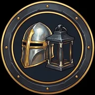
Win every field of a march without opening a hint there.
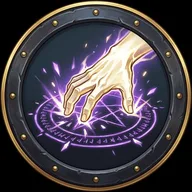
Break a hex with the Chaplain's blessing on the road.
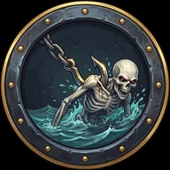
Drag one of the dead into water or lava with the Hookman on the road.
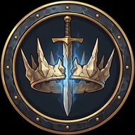
Cut down a Bone King on the road.
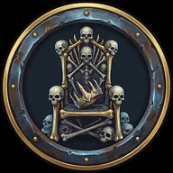
Hidden until it is done.
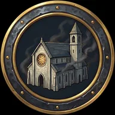
Hidden until it is done.
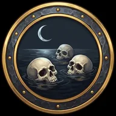
Hidden until it is done.
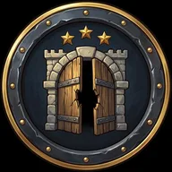
Hidden until it is done.
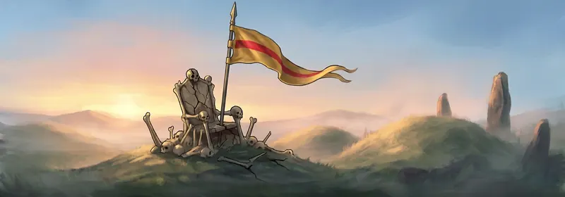
The barrows are quiet. The dead lie where they fell, and the knights ride home.
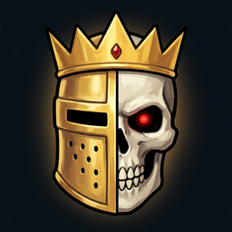
The tutorial and The First March are free; one purchase unlocks The Long March and The Last March. No account, no ads, no subscriptions, plays offline.